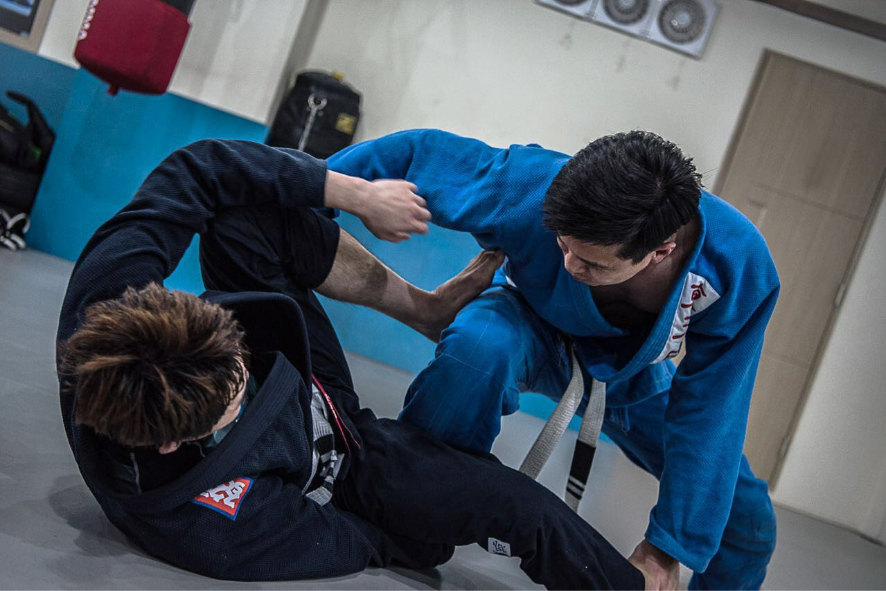

It is under construction.

KAIST Scholar
KAIST Scholar is a search engine for KAIST students to help find labs based on research papers. It provides collaboration network among professors at KAIST. Only available for KAIST students (KAIST Portal ID is required).

SIGCHI Local Chapter Korea
As a ACM SIGCHI local chapter korea web chair, I built an official website for it alone.

Pylatte
https://pypi.python.org/pypi/Pylatte
Python-based light web framework. This help developer build a website using Python as it is PHP/JSP.
KSE Quiz 2016
This website was built to help KSE (Department of Knowledge Service Engineering) members understand each other. It provides ranking based on the number of solved quizes. All quizes are about KSE students or professors.